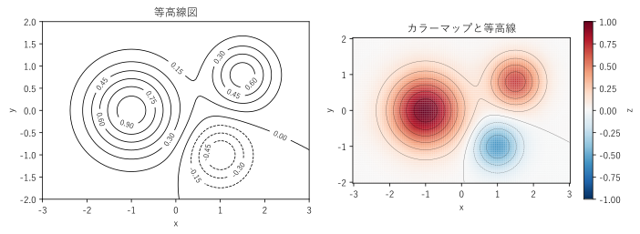
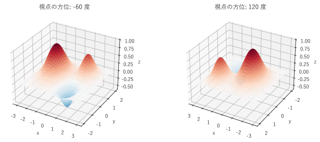
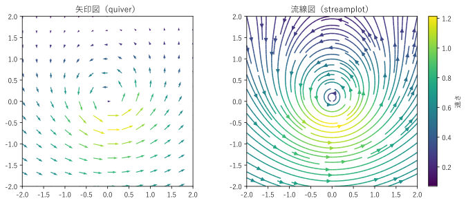

第 9 章 平面上の量を見る
温度の分布、電波の強さ、関数の値のように、平面上の各点に値を持つ量がある。また、風や水の流れのように、各点に向きと大きさを持つ量もある。この章では、このような平面上の量を描く、等高線図、カラーマップによる表示、3D サーフェス、ベクトル場の図を扱い、最後に地図上のデータの考え方を紹介する。
等高線図とカラーマップ
2 変数関数 \(z = f(x, y)\) の値を平面上に描く方法として、等高線図と、値を色で塗る方法がある（図 33）。

図 33 2 つの山と 1 つの谷を持つ関数の等高線図（左）と、カラーマップによる表示（右）
等高線図は、値が等しい点を結んだ線（等高線）を、一定の間隔の値ごとに描く。地図の等高線と同じく、線が密な所は値の変化が急であることを表す。線に値を書き添えれば、正確な値も読み取れる。左の図では、\((-1, 0)\) 付近と \((1.5, 0.8)\) 付近に山が、\((1, -1)\) 付近に谷（負の値。破線）があることが分かる。
カラーマップによる表示は、各点の値を色で塗る。山と谷の位置や全体の様子を直感的につかめる。この例では値が正と負にまたがるので、0 を白とする発散カラーマップを使っている。色だけでは正確な値が分からないので、右の図では等高線を薄く重ねている。
27def create_figure() -> Figure:
28 """等高線図とカラーマップを並べて描く."""
29 xx, yy, zz = make_field()
30 fig, (ax_left, ax_right) = plt.subplots(1, 2, figsize=(10, 3.4))
31
32 lines = ax_left.contour(xx, yy, zz, levels=10, colors="black",
33 linewidths=0.8)
34 ax_left.clabel(lines, fontsize=8) # 等高線に値を書く
35 ax_left.set_title("等高線図")
36
37 mesh = ax_right.pcolormesh(xx, yy, zz, cmap="RdBu_r", vmin=-1, vmax=1)
38 ax_right.contour(xx, yy, zz, levels=10, colors="black",
39 linewidths=0.4, alpha=0.5)
40 fig.colorbar(mesh, ax=ax_right, label="z")
41 ax_right.set_title("カラーマップと等高線")
42
43 for ax in (ax_left, ax_right):
44 ax.set_aspect("equal")
45 ax.set_xlabel("x")
46 ax.set_ylabel("y")
47 fig.tight_layout()
48 return fig
関数の値は、np.meshgrid() で作った格子点の座標から計算する（make_field()）。contour() は等高線を、pcolormesh() は格子のマスを色で塗った図を描く。
サンプルの全体：ch09_contour.py
3D サーフェス
同じ関数を、高さを \(z\) とした曲面（3D サーフェス）として描くこともできる（図 34）。

図 34 視点の方位を変えた 2 つの 3D サーフェス
3D サーフェスは、山と谷の立体的な形を直感的に伝えられる。一方、紙や画面に描くと次の問題がある。
手前の山が奥を隠す。左の図では右下の谷がよく見えるが、右の図では手前の山に隠れて見えにくい。視点によって見える部分が変わる。
値を読み取りにくい。遠近法で描かれるため、曲面の上の点が軸のどの目盛りにあたるかを判断するのが難しい。
そのため、静止画で値の分布を正確に伝えるには、等高線図やカラーマップの方が向いている。3D サーフェスは、マウスで視点を回転できる対話的な環境で使うか、形のイメージを伝える補助として使う。
16def create_figure() -> Figure:
17 """視点の異なる 2 つの 3D サーフェスを描く."""
18 xx, yy, zz = make_field()
19 fig = plt.figure(figsize=(10, 4))
20 for index, (elevation, azimuth) in enumerate([(30, -60), (30, 120)]):
21 ax = fig.add_subplot(1, 2, index + 1, projection="3d")
22 ax.plot_surface(xx, yy, zz, cmap="RdBu_r", vmin=-1, vmax=1,
23 rstride=2, cstride=2, linewidth=0)
24 ax.view_init(elev=elevation, azim=azimuth) # 視点の高さと方位
25 ax.set_title(f"視点の方位: {azimuth} 度")
26 ax.set_xlabel("x")
27 ax.set_ylabel("y")
28 ax.set_zlabel("z")
29 fig.tight_layout()
30 return fig
matplotlib では、projection="3d" を指定した Axes で 3D のグラフを描く。view_init() で視点の高さ（elev）と方位（azim）を変えられる。
サンプルの全体：ch09_surface.py
ベクトル場
風速や水の流れのように、各点に向きと大きさを持つ量をベクトル場という。ベクトル場は、矢印図と流線図で描く（図 35）。

図 35 渦と一様な流れを重ねた流れの矢印図（左）と流線図（右）
矢印図（quiver）は、格子点ごとに、その点のベクトルを矢印で描く。矢印の向きが流れの向き、長さが速さを表す。各点の値を正確に表せるが、矢印を密にすると重なって読めなくなる。
流線図（streamplot）は、流れに沿った曲線（流線）を描く。流れ全体の様子、渦の中心、流れの合流や分岐が分かりやすい。一方、個々の点での速さは線の色や太さで補う必要がある。
この例は、原点の周りを反時計回りに回る渦と、右向きの一様な流れを重ねたものである。流線図では、渦の中心が原点からわずかに上にずれていることや、渦の下側で流れが速いことが読み取りやすい。
25def create_figure() -> Figure:
26 """同じベクトル場を矢印図と流線図で描く."""
27 fig, (ax_left, ax_right) = plt.subplots(1, 2, figsize=(10, 4.2))
28
29 # 矢印図: 格子点ごとに 1 本の矢印を描く。間隔を粗くする
30 x = np.linspace(-2, 2, 13)
31 xx, yy = np.meshgrid(x, x)
32 u, v = velocity(xx, yy)
33 # scale_units="xy" と scale=4 で、速さ 1 の矢印を長さ 0.25 で描く
34 ax_left.quiver(xx, yy, u, v, np.hypot(u, v), cmap="viridis",
35 angles="xy", scale_units="xy", scale=4)
36 ax_left.set_title("矢印図（quiver）")
37
38 # 流線図: 流れに沿った線を描く。線の色で速さを表す
39 x = np.linspace(-2, 2, 100)
40 xx, yy = np.meshgrid(x, x)
41 u, v = velocity(xx, yy)
42 stream = ax_right.streamplot(xx, yy, u, v, color=np.hypot(u, v),
43 cmap="viridis", density=1.2)
44 fig.colorbar(stream.lines, ax=ax_right, label="速さ")
45 ax_right.set_title("流線図（streamplot）")
46
47 for ax in (ax_left, ax_right):
48 ax.set_aspect("equal")
49 ax.set_xlim(-2, 2)
50 ax.set_ylim(-2, 2)
51 fig.tight_layout()
52 return fig
サンプルの全体：ch09_vector_field.py
地図上のデータ
都道府県別の人口、地域別の売上のように、地域ごとの値を地図上に描く方法を紹介する。本書では、地図の境界データや地図用のライブラリが必要になるため、コードは示さない。
描き方 |
内容 |
|---|---|
地域を値に応じた色で塗り分ける。人口密度、得票率など、地域の面積と関係のない割合や密度を表すのに向く。人口のような総量を塗り分けると、面積の大きな地域が目立ち、誤解を招く。 |
|
シンボルマップ |
地域の位置に、値に比例した面積の円などを置く。総量を表すのに向く。 |
点描図 |
個々の事象（店舗、事故など）の位置に点を打つ。分布の偏りが分かる。点が多い場合は、第 5 章と同様にオーバープロットへの対策が必要である。 |
Python では、GeoPandas（地理データの処理）や Cartopy（地図の投影）を matplotlib と組み合わせて地図を描ける。地図は地域の面積や形が見た目に大きく影響するため、地図に描くこと自体が目的に合っているかを考える。地域の位置関係が重要でなければ、地域ごとの棒グラフの方が値を正確に比べられる。
まとめ
平面上の量は、等高線図やカラーマップで描く。正と負にまたがる値には発散カラーマップを使う。
3D サーフェスは形のイメージを伝えるのに使い、正確な値の伝達には等高線図を使う。
ベクトル場は、点ごとの値なら矢印図、全体の流れなら流線図で描く。
地図上に描くかどうかは、位置関係が重要かどうかで判断する。